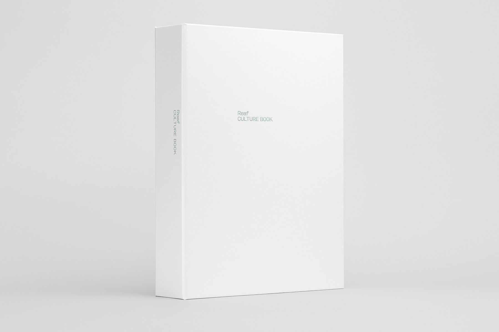
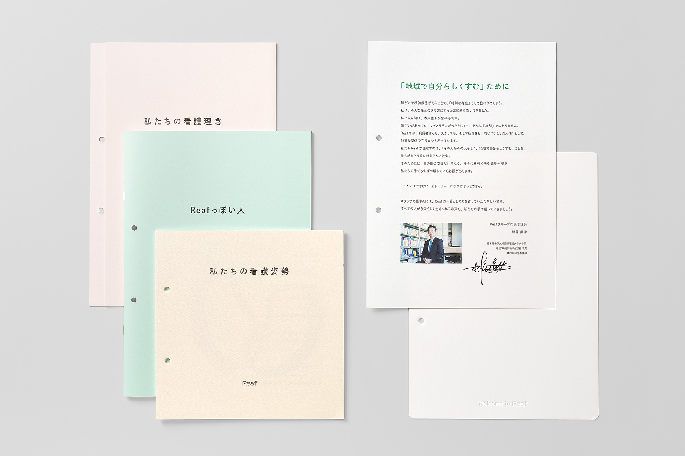
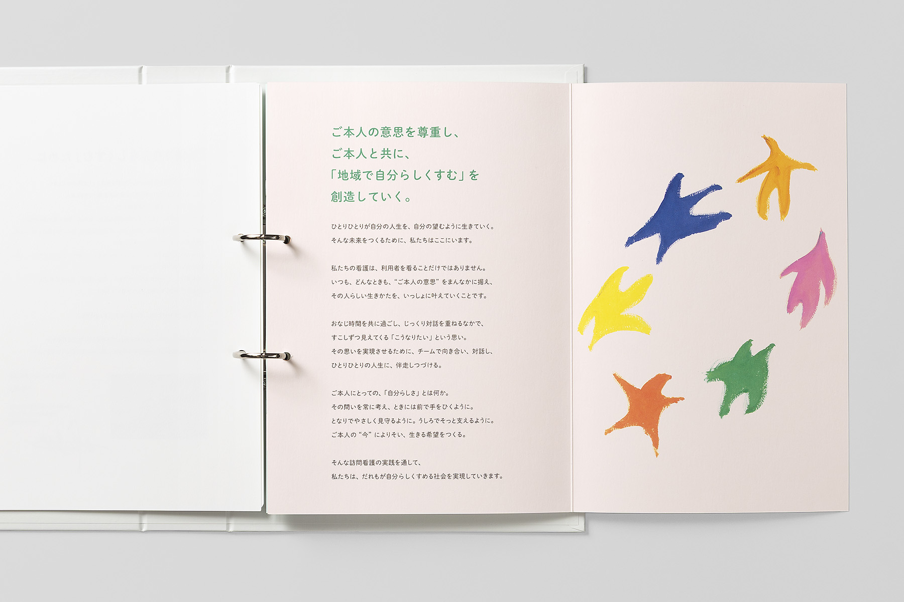
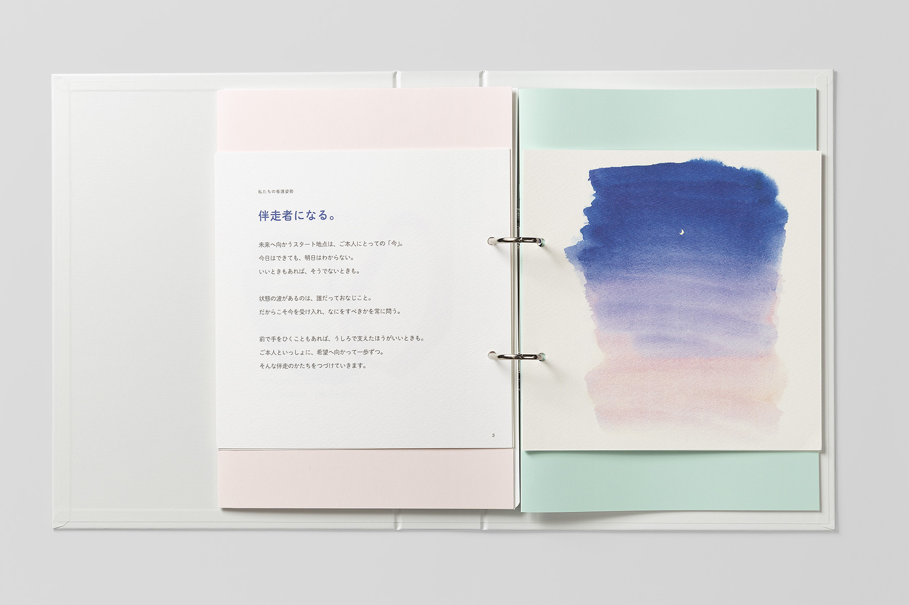
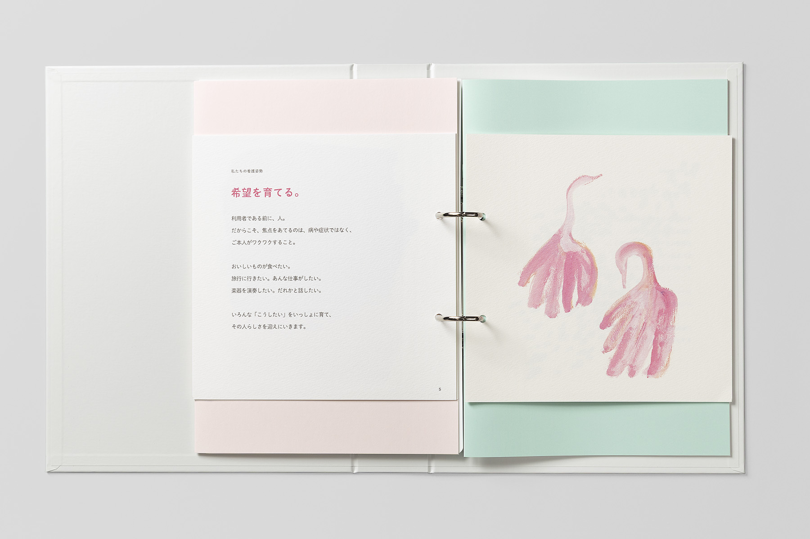
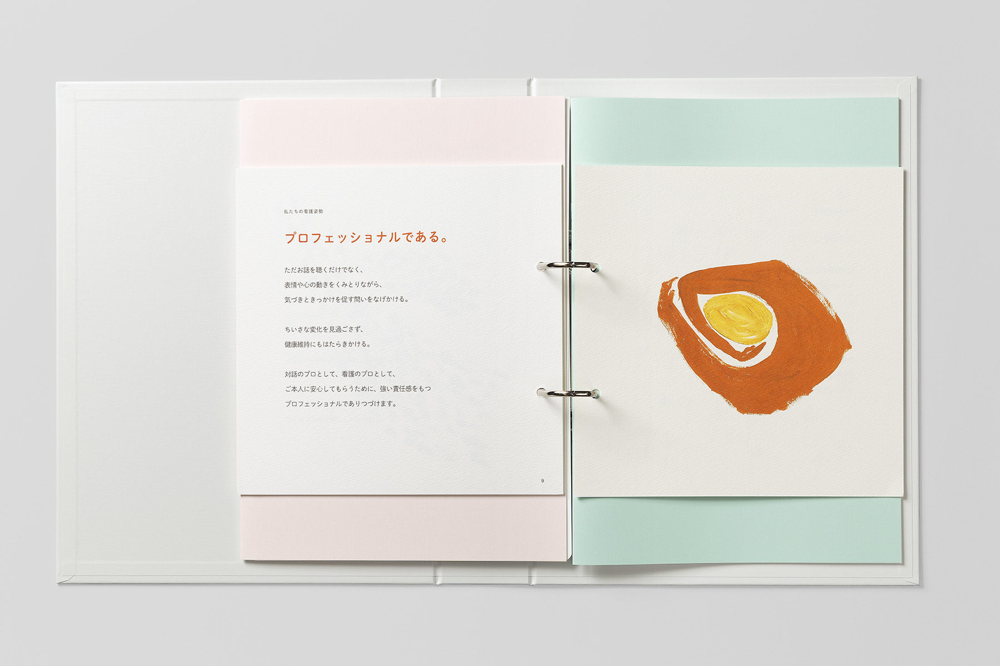
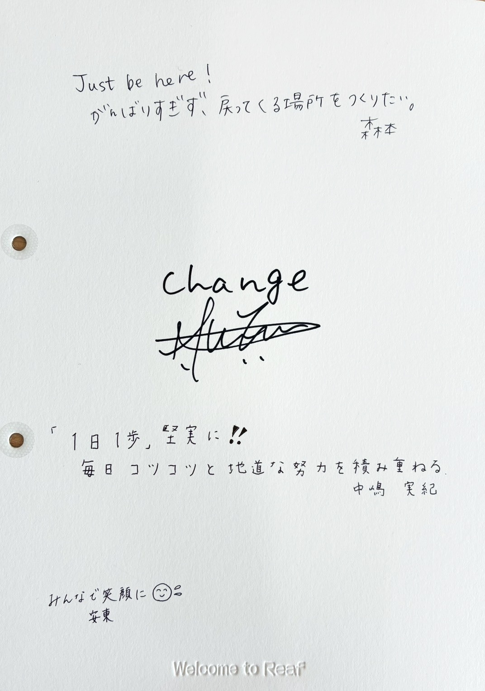

株式会社ラポート
訪問看護ステーションReafグループ
2025
訪問看護ステーションReafは、精神的困難を抱える方々が地域で自分らしく暮らせる社会をつくりたいという思いから、2014年に福岡県久留米市で開設された、精神科に特化した訪問看護ステーションです。「ご本人の意思を尊重し、ご本人と共に、『地域で自分らしくすむ』を創造していく」という看護理念は、代表看護師の村尾眞治氏が、毎日・毎月の定例や理念研修を通じて現場に伝えてきました。
事業所が増え、フランチャイズでの展開も始まると、代表ひとりの言葉が届く範囲には限りが生まれます。シンタケダは、理念が代表個人の言葉ではなく「Reafの言葉」として伝わる状態を目指して、ブランディングの設計、スタッフへの調査、ワークショップ、コピーライティングを担当しました。
完成したブランドブック「Reaf CULTURE BOOK」は、17事業所（2026年3月時点）の各ステーションに1冊ずつ置かれ、ミーティングや理念研修で使われています。
取り組みスタッフの声を聞く
当初の構想は、これまでの言葉を整理し、1冊のブランドブックに集約するものでした。ただ、言葉を集約するだけでは組織の言葉にならない、という仮説がありました。そこで、まずスタッフアンケートで、理念をどう受け止め、どう実践しているかを尋ね、一部のスタッフへのインタビューでその声を掘り下げました。そのうえで仮説を持って全体会議でワークショップを行い、現場で使われている言葉を一つひとつ拾い集めました。
理念はそのままに、行動の言葉を加える
看護理念はもとの言葉のまま大切にしたうえで、現場の行動の言葉として「看護姿勢」をつくりました。「おなじ未来をみる。」「伴走者になる。」「希望を育てる。」「チームで向きあう。」「プロフェッショナルである。」「仲間をふやす。」の6つの姿勢は、スタッフの声を聞くうちに、「ときには買い物に誘ってみる」「ただ黙って、そばにいるだけでもいい」といった、日々の看護の場面が浮かぶ言葉になっていきました。





書き足して育てるバインダー
CULTURE BOOKは、3冊の冊子と代表のメッセージをまとめたバインダー形式です。バインダーには書き込める台紙があり、「Welcome to Reaf」の台紙には、スタッフ一人ひとりの言葉や代表のメッセージが書き足されています。新しく加わる仲間へのメッセージや、新規開設時の所信表明も加わり、つくって終わりではなく、関わる人の手で書き足され、育っていくブランドブックになっています。
